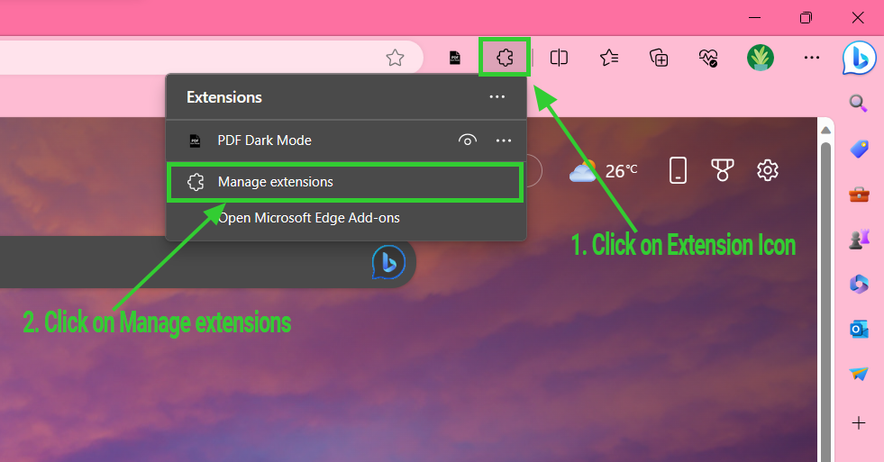
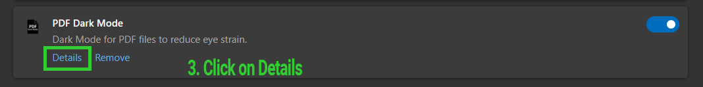
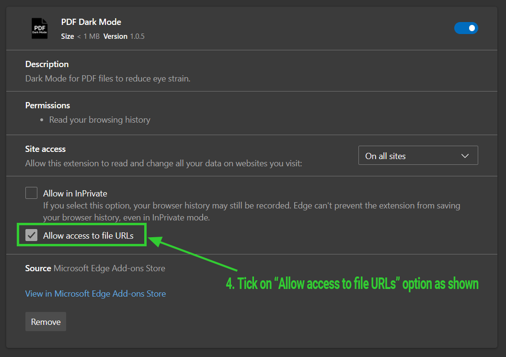

Thank you for Choosing "PDF Dark Mode"

Please follow these steps to enable the extension for local PDFs
-
Step 1: Open Extensions tab
Step 2: Click manage extensions -
Step 3: Click details under PDF Dark Mode
-
Step 4: Allow access to file URL